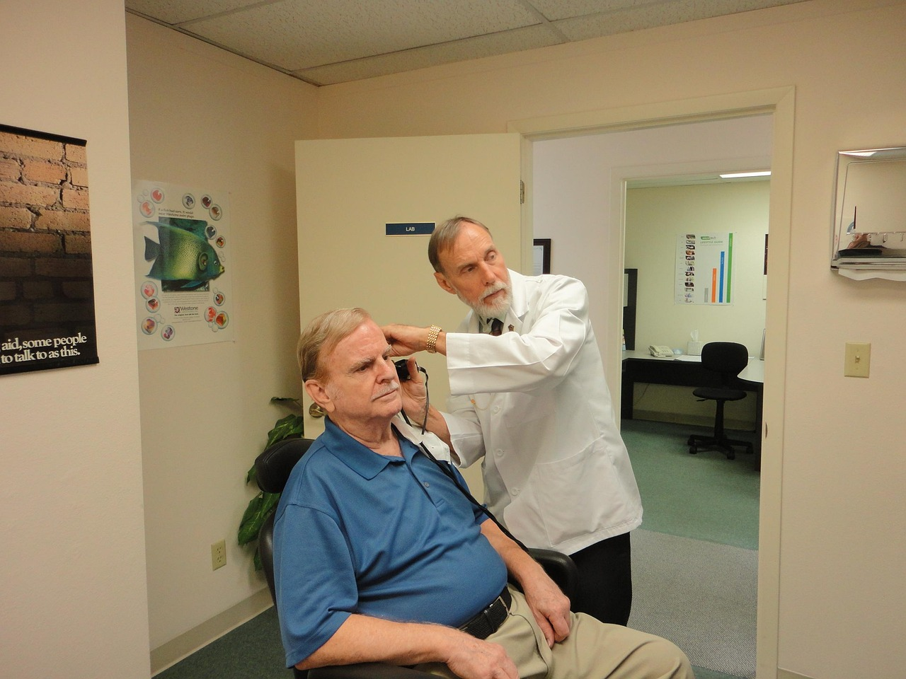

Fonoaudiologia
Equipe de fonoaudiólogos, segundo o cadastro público da clínica.

Fonoaudiologia no Centro de Caxias do Sul
Clínica de fonoaudiologia no Centro de Caxias do Sul, com atendimento de segunda a sexta.
Foto ilustrativa (Pixabay). No site final entram as fotos da clínica.
Atendimento
Os dados abaixo vêm do cadastro público da clínica (CNES). No site final, a Ressoar escolhe as áreas que quer destacar.
Equipe de fonoaudiólogos, segundo o cadastro público da clínica.
Serviço de reabilitação, com fisioterapeuta também na equipe.
O cadastro público indica atendimento particular e por planos de saúde.

A clínica
A RESSOAR Clínica de Fonoaudiologia fica na Rua Marquês do Herval, 1469, salas 302 e 303, no Centro de Caxias do Sul.
O telefone publicado é o (54) 3066-1827 e o e-mail ressoarfono@hotmail.com.
Os botões de WhatsApp desta prévia usam o telefone publicado; no site final, vocês confirmam qual número atende no WhatsApp.
Não incluímos preços nem depoimentos: só dados públicos. As fotos desta prévia são ilustrativas, de banco de imagens gratuito.
Quando ir
Horários do cadastro público da clínica.
A clínica fica no Centro de Caxias do Sul, na Rua Marquês do Herval.
Onde estamos
R. Marquês do Herval, 1469, salas 302 e 303 · Centro, Caxias do Sul - RS, 95020-262
Dúvidas
Ligue para (54) 3066-1827 e diga o motivo da consulta.
O cadastro público indica atendimento por planos de saúde. Confirme o seu plano por telefone.
R. Marquês do Herval, 1469, salas 302 e 303 · Centro, Caxias do Sul - RS, 95020-262. Veja o mapa nesta página ou peça a localização pelo WhatsApp.
Ligue ou chame no WhatsApp, conte o motivo da consulta e combine o melhor horário.